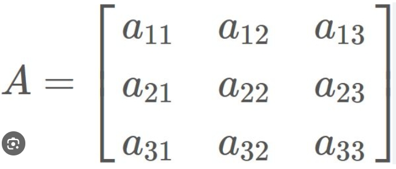

3x3 Matrix
A 3x3 matrix is a rectangular array of numbers arranged in three rows and three columns. It looks like:

The subscripts denote the position of an element in the matrix. For example,
1. a11, a12, a13 are the elements in the first row.
2. a21, a22, a23 are the elements in the second row.
3. a31, a32, a33 are the elements in the third row.
3x3 matrices are commonly used in various mathematical operations, including linear algebra. They can represent linear
transformations, systems of linear equations, and other mathematical structures.